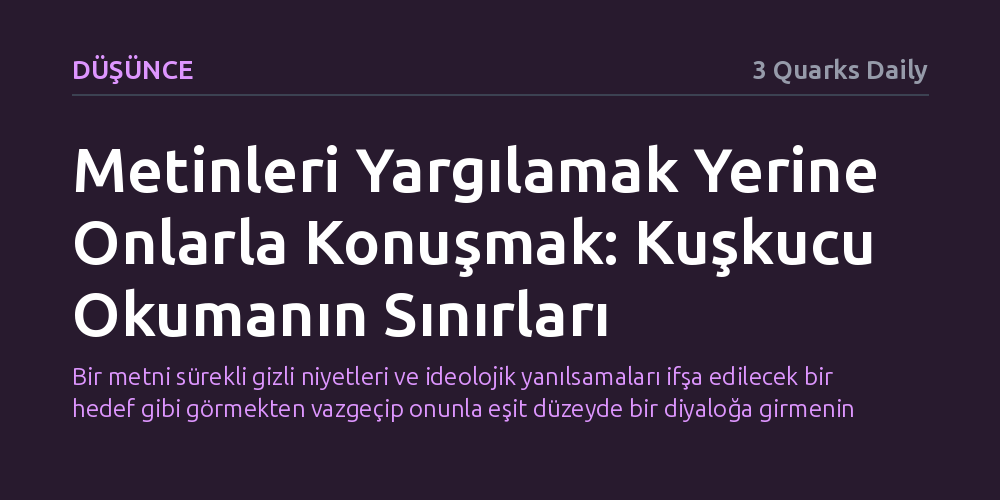

DUSUNCE · 3 Quarks Daily · 2026-09-08
Çağdaş okuma alışkanlıkları metinleri ideolojik maskeleri düşürülecek sanıklar gibi yargılarken, düşünce mirasıyla sahici bağ ancak onları birer sohbet ortağı kabul etmekle kurulabilir. Yazı, kuşkucu yorumbilimin bilinci bütünüyle şüpheli sayan refleksine karşı katılımcı bir okuma tavrını savunuyor.
Bir metni sürekli gizli niyetleri ve ideolojik yanılsamaları ifşa edilecek bir hedef gibi görmekten vazgeçip onunla eşit düzeyde bir diyaloğa girmenin dönüştürücü değerini hatırlatır.

Machiavelli sürgündeyken akşamları çalışma odasına çekilip saray giysilerini giyer ve antik çağın büyük düşünürleriyle saatlerce konuşurdu. W.E.B. Du Bois için de kütüphane rafları, ırk ayrımcılığının ve önyargıların aşıldığı, geçmişin büyük zihinleriyle eşit yurttaşlar gibi dertleşebildiği bir sığınaktı. Bu yaklaşımda okumak, metni dışarıdan teftiş edilen soğuk bir nesneye dönüştürmez; aksine okuru o büyük düşünce zincirinin canlı bir halkası, metni de yaşayan bir sohbet ortağı kılar.
Klasik gelenekte bir eseri eline almak, kişinin kendi hayatını ve bilgisini dönüştürmeyi göze alarak bir karşılaşmaya adım atması demekti. Okur, yazarın karşısına onu alt etmek ya da açığını yakalamak amacıyla değil, onunla düşünsel bir ortaklık kurmak için çıkardı. Bu tavır, düşünce mirasını donmuş bir kalıntı olarak görmek yerine, bugünün sorularına yanıt ararken başvurulacak canlı bir meclis olarak kabul ediyordu.
Son birkaç on yılda bu yapıcı diyalog anlayışının yerini bambaşka bir okuma refleksi aldı: maske düşürme, teşhis koyma ve suçlama içgüdüsü. Fransız filozof Paul Ricœur bu yaklaşımı "kuşkucu yorumbilim" olarak adlandırdı. Batı felsefesinde şüphe aslında yabancı bir kavram değildi; Descartes'tan bu yana dış dünyanın gerçekliği zaten titiz bir sorgulamaya tabi tutulmuştu. Ancak Marx, Nietzsche ve Freud ile birlikte şüphenin yönü kökten değişerek dış dünyadan insan zihninin kendi içine çevrildi.
Bu üç büyük düşünürün ortak paydası, insan bilincini esasen bir yanlış bilinç alanı olarak görme kararlarıydı. Artık bireyin kendi eylemleri, niyetleri ya da inançları hakkında anlattığı hikâyeler güvenilir kabul edilmiyordu. İnsanların adalete, ahlaka ya da sanata dair kurdukları bütün anlatılar; aslında bastırılmış bilinçdışı arzuları gizleyen, ideolojik güç ilişkilerini doğallaştıran ya da kurulu adaletsizlikleri rasyonelleştiren birer saptırma ve perde olarak yorumlanmaya başlandı.
Kuşkucu okuma biçimi, metinlerin ardındaki iktidar mekanizmalarını ve ideolojik tuzakları görme konusunda güçlü bir eleştirel donanım sağlasa da zamanla bir tür entelektüel alışkanlığa dönüştü. Metne önceden verilmiş bir hükümle, yani onun mutlaka bir şeyleri gizlediği veya meşrulaştırdığı varsayımıyla yaklaşan okur, kaçınılmaz olarak bir mahkeme savcısına dönüşür. Bu durumda metinle kurulacak sahici bir fikir alışverişi imkânsızlaşır; çünkü sanık sandalyesine oturtulan bir eserle sohbet edilemez, sadece onun sorgusu yapılır.
Oysa düşüncenin derinleşmesi, metnin sunduğu hakikat iddiasına kulak kabartabilmekten geçer. Kuşku tek başına nihai bir amaç haline geldiğinde, metnin bize ne öğretebileceğini baştan reddetmiş oluruz. Eleştirel dikkati elden bırakmadan ama metni peşinen suçlamadan okumak, yani bir savcı değil katılımcı olabilmek, düşünce mirasıyla aramızdaki bağı yeniden canlandırmanın anahtarıdır.